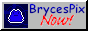
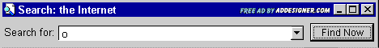

BrycesPix ADsBrycesPix ADs
BrycesPix ADsBrycesPix ADs
<a href="https://lelegofrog.github.io" target="_blank" rel="noopener noreferrer"><img src="https://lelegofrog.github.io/brycespixbutton.gif"></a>
<a href="https://lelegofrog.github.io" target="_blank" rel="noopener noreferrer"><img src="https://lelegofrog.github.io/brycespixad.gif"></a>